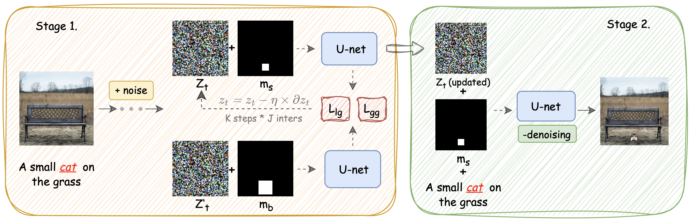

Towards Small Object Editing: A Benchmark Dataset and A Training-Free Approach
[Paper]
[Code]
Anonymous Authors
Anonymous Institutions
SOEBench is a standardized benchmark for quantitatively evaluating text-based small object editing(SOE) collected from MSCOCO and OpenImage and contains totally 4k images.
We also introduce a training-free cross-attention guidance methods to deal with this problem.
Abstract
A plethora of text-guided image editing methods has recently been developed by leveraging the impressive capabilities of large-scale diffusion-based generative models especially Stable Diffusion. Despite the success of diffusion models in producing high-quality
images, their application to small object generation has been limited due to difficulties in aligning cross-modal attention maps between text and these objects. Our approach offers a training-free
method that significantly mitigates this alignment issue with local and global attention guidance , enhancing the model’s ability to
accurately render small objects in accordance with textual descriptions. We detail the methodology in our approach, emphasizing its divergence from traditional generation techniques and highlighting its advantages. What’s more important is that we also provide SOEBench (Small Object Editing), a standardized benchmark
for quantitatively evaluating text-based small object generation collected from MSCOCO and OpenImage. Preliminary results demonstrate the effectiveness of our method, showing marked
improvements in the fidelity and accuracy of small object generation compared to existing models. This advancement not only
contributes to the field of AI and computer vision but also opens up new possibilities for applications in various industries where precise image generation is critical.

Method
Building upon the constructed SOEBench, we further provide a strong baseline method for small object editing. As discussed above, the quality of the cross-attention map is crucial in small
object editing. To this end, we propose a new joint attention guidance method to enhance the accuracy of the cross-attention map alignment from both local and global perspectives. In particular,we first develop a local attention guidance strategy to enhance
the foreground cross-attention map alignment and then introduce a global attention guidance strategy to enhance the background cross-attention map alignment. Our proposed baseline method is training-free but highly effective in addressing the SOE problem.
